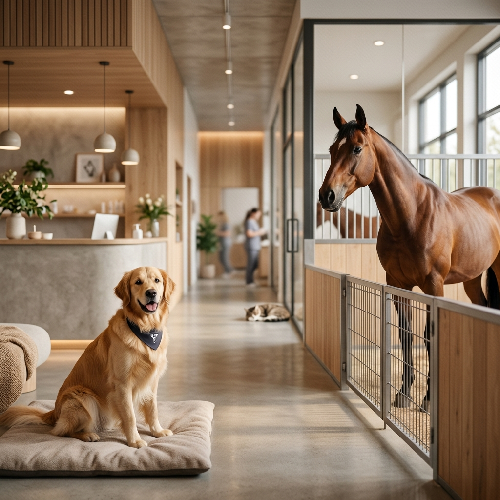
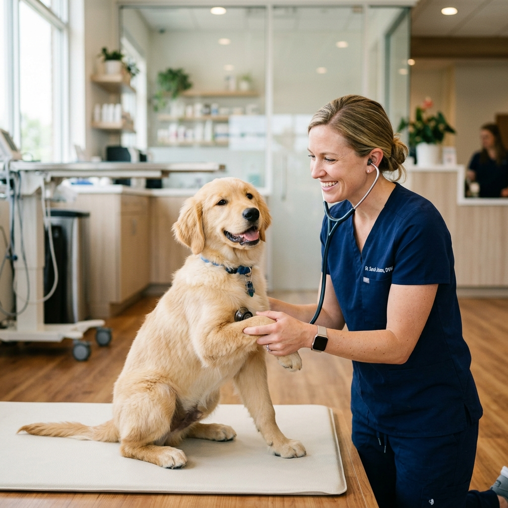
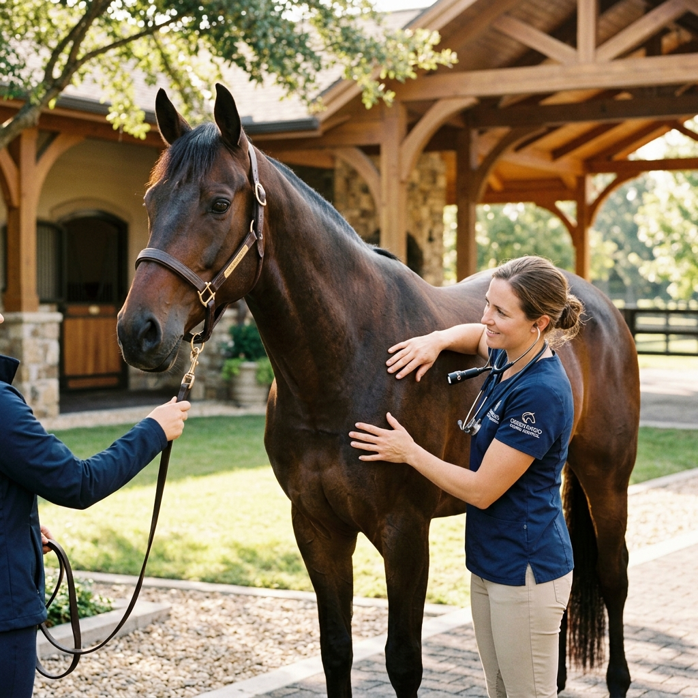

Die Gesundheit unserer Patienten und die Zufriedenheit ihrer Besitzer stehen bei uns an erster Stelle. Vertrauensvolle Tiermedizin in Emmerich am Rhein.
Wir nehmen uns Zeit für unsere Patienten und Ihre Besitzer. Egal ob Pferd, Hund, Katze, Kaninchen oder Reptilien – wir begegnen jedem Tier mit Ruhe, Fachwissen und viel Einfühlungsvermögen.
Unsere moderne Praxisausstattung ermöglicht uns eine fundierte Diagnostik und optimale Behandlungsmöglichkeiten für kleine wie große Patienten.

Umfassende tiermedizinische Betreuung für Haus- und Nutztiere.
Von der Impfung bis zur komplexen Diagnostik. Wir sind rundum für Hunde, Katzen, Heimtiere und Reptilien da.
Mehr erfahren →
Ambulante Fahrpraxis für Pferde. Professionelle Betreuung, Orthopädie, Gynäkologie und allgemeine Untersuchungen direkt bei Ihnen im Stall.
Mehr erfahren →Haben Sie Fragen oder möchten Sie einen Termin vereinbaren? Rufen Sie uns an oder schreiben Sie eine E-Mail.
Google Maps Karte hier integrieren